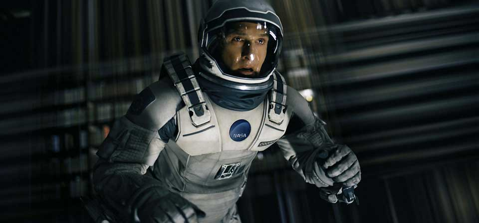
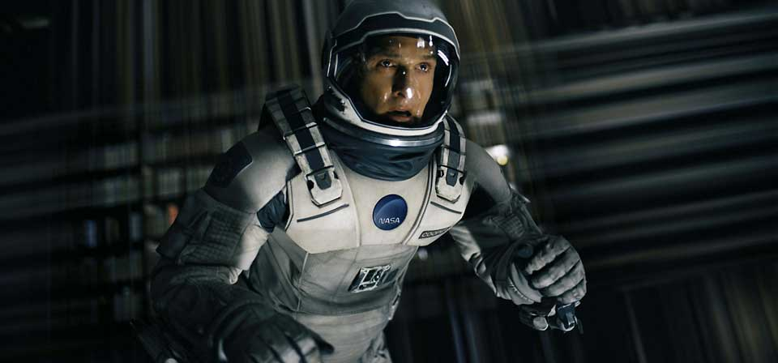

Introduccion

Dirigida por Christopher Nolan, Interstellar es una de las mejores peliculas por no decir la mejor del siglo XXI y del año 2014.
Protagonizada por Matthew McConaughey, Jessica Chastain, Anne Hathaway, Timothee Chalamet y Matt Damon, Interstellar esta ambientada en el futuro donde la tierra en la que vivimos no nos permite habitarla como antes. Por ello un equipo de la NASA dirigida por Cooper (Matthew McConaughey) intentaran encontrar un nuevo planeta habitable en un viaje interstellar.
Datos Generales
| Direccion: | Christopher Nolan |
| Guion: | Jonathan Nolan |
| Musica: | Hans Zimmer |
| Reparto: | Matthew McConaughey, Anne Hathaway, Jessica Chastain, Timothee Chalamet |
| Estreno: | 26 de Octubre de 2014 |
| Genero: | Ciencia Ficcion, Drama, Distopia, Epica |
| Duracion: | 169 minutos |
| Presupuesto: | 165.000.000 USD |
| Recaudacion: | 773.897.851 USD |


 
